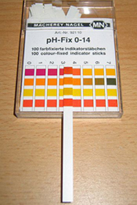

Special indicators are used to measure pH of solutions. pH indicators are substances that undergo a sharp, easily observable colour change when pH of a solution changes. Commonly used indicators are methyl orange and phenolphthalein.
pH value can be roughly and quickly measured with pH paper strips, which change colour depending on pH value in a solution. E.g. litmus paper turns red if environment in a solution is acidic and it turns blue if environment is basic. The colour of litmus paper does not change if a solution is neutral. Using pH strips is convenient and simple. A strip is submerged in the solution of interest and the reading of pH is done by comparing/matching the colour of the strip with the colour range on the package.
pH indicator paper. (This is a file from Wikimedia Commons.) http://creativecommons.org/licenses/by/3.0/deed.en